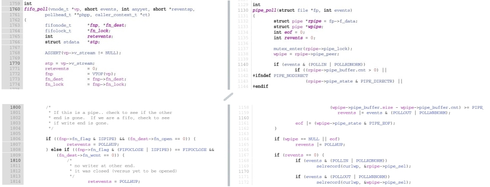

During nc(1) preintegration testing, short time before it went back
I had found that 'cat /etc/passwd | nc localhost 4444' produced endless loop with
100% CPU utilization, looping in calls doing poll(2) (I still remember my laptop suddenly getting much warmer
than it should be and CPU fan cranking up).
'nc localhost 4444 < /etc/password' was not exhibiting that behavior.
The cause was a difference between poll(2) implementation on BSD and Solaris. Since I am working on Netcat
in Solaris again (adding more features, stay tuned), it's time to take a look back
and maybe even help people porting similar software from BSD to Solaris.
The issue appears because POLLHUP is set in read events bitfield for stdin after pipe is
closed (or to be more precise - after the producer/write end is done) on Solaris.
poll.c (which resembles
readwrite()
function from nc) illustrates the issue:
01 #include <stdio.h>
02 #include <poll.h>
03
04 #define LEN 1024
05
06 int main(void) {
07 int timeout = -1;
08 int n;
09 char buf[LEN];
10 int plen = LEN;
11
12 struct pollfd pfd;
13
14 pfd.fd = fileno(stdin);
15 pfd.events = POLLIN;
16
17 while (pfd.fd != -1) {
18 if ((n = poll(&pfd, 1, timeout)) < 0) {
19 err(1, "Polling Error");
20 }
21 fprintf(stderr, "revents = 0x%x [ %s %s ]\\n",
22 pfd.revents,
23 pfd.revents & POLLIN ? "POLLIN" : "",
24 pfd.revents & POLLHUP ? "POLLHUP" : "");
25
26 if (pfd.revents & (POLLIN|POLLHUP)) {
27 if ((n = read(fileno(stdin), buf, plen)) < 0) {
28 fprintf(stderr,
29 "read() returned neg. val (%d)\\n", n);
30 return;
31 } else if (n == 0) {
32 fprintf(stderr, "read() returned 0\\n", n);
33 pfd.fd = -1;
34 pfd.events = 0;
35 } else {
36 fprintf(stderr, "read: %d bytes\\n", n);
37 }
38 }
39 }
40 }
Running it on NetBSD (chosen because my personal non-work mailbox is hosted on a machine running it)
produces the following:
otaku[~]% ( od -N 512 -X -v /dev/zero | sed 's/ [ \\t]\*/ /g'; sleep 3 ) | ./poll
revents = 0x1 [ POLLIN ]
read: 1024 bytes
revents = 0x1 [ POLLIN ]
read: 392 bytes
revents = 0x11 [ POLLIN POLLHUP ]
read() returned 0
I had to post-process the output of od(1) (because of difference between output of od(1) on NetBSD
and Solaris) and slow the execution down a bit (via sleep) in order to make things more visible
(try to run the command without the sleep and the pipe will be closed too quickly).
On OpenSolaris the same program produces different pattern:
moose:~$ ( od -N 512 -X -v /dev/zero | sed 's/ [ \\t]\*/ /g' ; sleep 3 ) | ./poll
revents = 0x1 [ POLLIN ]
read: 1024 bytes
revents = 0x1 [ POLLIN ]
read: 392 bytes
revents = 0x10 [ POLLHUP ]
read() returned 0
So, the program is now obviously correct. Had the statement on line 26 checked only POLLIN,
the command above (with or without the sleep) would go into endless loop on Solaris:
revents = 0x11 [ POLLIN POLLHUP ]
read: 1024 bytes
revents = 0x11 [ POLLIN POLLHUP ]
read: 392 bytes
revents = 0x10 [ POLLHUP ]
revents = 0x10 [ POLLHUP ]
revents = 0x10 [ POLLHUP ]
...
Both OSes set POLLHUP after the pipe is closed. The difference is that while BSD always
indicates POLLIN (even if there is nothing to read), Solaris strips it after data stream ended.
So, which one is correct ?
poll() function as
described by OpenGroup says that
"POLLHUP and POLLIN are not mutually exclusive
".
This means both implementations seem to conform to the IEEE Std 1003.1, 2004 Edition standard
(part of POSIX) in this respect.
However, the POSIX standard also says:
This might be still ok even though POLLIN flag
remains to be set in NetBSD's poll() even after no data are available for reading (try to comment out lines
33,34 and run as above) because the standard says about POLLIN flag:
For STREAMS, this flag is set in revents even if the message is of zero length.
Without further reading it is hard to tell how exactly should POSIX compliant poll() look like.
On the
Austin group mailing list
there was a
thread about poll() behavior w.r.t. POLLHUP
suggesting this is fuzzy area.
Anyway, to see where exactly is POLLHUP set for pipes in OpenSolaris go to fifo_poll(). The function _sets_ the revents bit field to POLLHUP so the POLLIN flag is wiped off after that.
fifo_poll() is part of fifofs kernel module which has been around in Solaris since late eighties
(I was still in elementary school the year fifovnops.c
appeared in SunOS code base :)).
NetBSD has fifofs too but the POLLHUP flag gets set via bit logic operation in pipe_poll() which is part of syscall processing code.
The difference between OpenSolaris and NetBSD (whoa, NetBSD project uses
OpenGrok !) POLLHUP attitude (respectively) is now clear:
